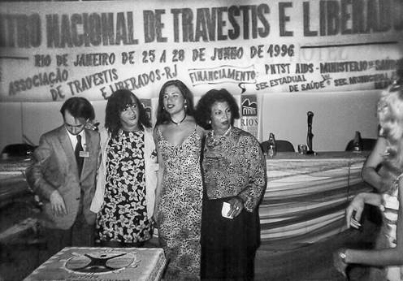
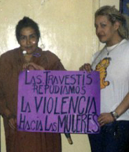

Travesti é uma identidade de gênero e política de matriz estritamente latino-americana — consolidada com particular densidade histórica no Brasil e na Argentina — referente a pessoas às quais foi designado o sexo masculino ao nascer, mas que constroem sua existência, subjetividade e expressão corporal no espectro feminino e em dissidência com a cisnormatividade.
A categoria é marcada por sua especificidade cultural e intraduzibilidade: o termo não possui correlatos conceituais ou semânticos diretos em outras línguas (como inglês, francês, alemão, russo, mandarim, japonês ou árabe). Nesses idiomas, a palavra é frequentemente traduzida de forma inadequada por termos como cross-dresser, transvestite ou assimilada compulsoriamente à categoria médica anglo-saxônica de “mulher transexual”. Na América Latina, contudo, a travestilidade constitui uma identidade autônoma, territorializada e indissociável de marcadores de classe, corporalidade e resistência anticolonial.
(写真: 上院通信社, 2024. CC BY-SA 4.0)
1. Etimologia, Intraduzibilidade e Transmutação Semântica
A palavra remonta ao latim vulgar transvestire (“mudar de roupa”, “vestir o traje de outrem”), que derivou no italiano travestire e no francês travesti. Durante os séculos XVIII e XIX, o vocábulo operava sob dois eixos:
- O eixo estético/teatral: A convenção artística na qual atores encenavam papéis atribuídos ao sexo oposto (rôle travesti ou apresentações cênicas en travesti);
- O eixo médico-patologizante: No final do século XIX, com a emergência da sexologia europeia pelas obras de Richard von Krafft-Ebing (Psychopathia Sexualis, 1886) e Magnus Hirschfeld (Die Transvestiten, 1910), o termo foi fixado nos manuais psiquiátricos sob o rótulo de “transvestismo” ou “fetichismo travesti”, definindo uma suposta parafilia restrita à excitação erótica pelo vestuário.
Ao ser transportado para o contexto urbano sul-americano a partir da metade do século XX, o vocábulo sofreu uma fratura semântica radical. O discurso policial, penal e da imprensa sensacionalista apropriou-se da palavra para estigmatizar, prender e patologizar corpos dissidentes que ocupavam o espaço público. No entanto, a partir da década de 1980, os próprios sujeitos transformaram a injúria em trincheira de luta: travesti deixou de ser um verbo, um disfarce teatral ou um diagnóstico psiquiátrico para se consolidar como substantivo político e autodeterminação identitária.
Essa trajetória histórica explica por que línguas não latinas ou externas ao Cone Sul e ao Brasil carecem de equivalência: fora deste ecossistema sociopolítico, os dicionários estrangeiros continuam a restringir a palavra ao transformismo, à paródia carnavalesca ou a categorias psiquiátricas obsoletas.
2. Bases Biológicas, Genética e Neurociência da Identidade de Gênero
A compreensão científica sobre a emergência das identidades de gênero e das incongruências com o sexo cromossômico/gonadal avançou expressivamente, afastando modelos morais ou puramente psicanalíticos e demonstrando a complexidade da diferenciação sexual do encéfalo humano. A ciência contemporânea compreende a identidade de gênero como uma propriedade neurobiológica multifatorial e epigenética, que desmantela o modelo de binarismo biológico estrito.
2.1 Genética e Arquitetura Poligênica
Estudos genéticos modernos refutam a hipótese determinista de um “gene único” para o gênero ou a sexualidade, apontando para uma arquitetura genética complexa e poligênica:
- Polimorfismos em receptores hormonais: Pesquisas lideradas por geneticistas como Eric Vilain e consórcios internacionais identificaram variantes em genes que regulam a síntese e a recepção de esteroides sexuais — tais como os genes dos receptores de andrógeno (AR), de estrógeno (ESR1, ESR2) e da aromatase (CYP19A1). Variações no número de repetições de trinucleotídeos (como repetições CAG no receptor androgênico) alteram a sensibilidade celular aos andrógenos durante janelas críticas do desenvolvimento embrionário.
- Mecanismos Epigenéticos: A regulação da expressão gênica no sistema nervoso central mediada por metilação do DNA e modificações de histonas demonstra que o dimorfismo e a identidade não se encerram na presença dos cromossomos XX ou XY. A biologia molecular reconhece que o cariótipo fornece apenas o arcabouço inicial, enquanto redes epigenéticas regulam a diferenciação tecidual específica nos tecidos cerebrais.
2.2 Neurodesenvolvimento e Dimorfismo Cerebral
Ao contrário da diferenciação genital — que ocorre primordialmente no primeiro trimestre da gestação sob influência direta do gene SRY e dos níveis gonadais de testosterona —, a sexualização e organização funcional dos circuitos neurais centrais ocorre predominantemente no segundo e terceiro trimestres gestacionais, além do período neonatal precoce. Essa assincronia temporal explica por que o fenótipo anatômico externo pode divergir do neurodesenvolvimento da identidade subjetiva:
- Núcleos Sexualmente Dimórficos: Pesquisas pioneiras em neuroanatomia post-mortem conduzidas pela equipe do neurobiólogo Dick Swaab no Instituto Holandês de Neurociências demonstraram diferenciações morfológicas em núcleos subcorticais. Especificamente, o volume e o número de neurônios da porção central do núcleo leito da estria terminal (BSTc - Bed Nucleus of the Stria Terminalis) e do terceiro núcleo intersticial do hipotálamo anterior (INAH3) em indivíduos trans e travestis com identidade feminina alinham-se numericamente aos padrões observados em mulheres cisgênero, divergindo dos parâmetros masculinos típicos, independentemente de terapias hormonais na vida adulta.
- Conectividade e Neuroimagem Funcional: Estudos contemporâneos de ressonância magnética estrutural e funcional (como os conduzidos por Sven Müller e colaboradores) revelam padrões singulares na microestrutura da substância branca (via tensor de difusão) e nas redes de repouso neural (especialmente a rede de modo padrão, DMN), indicando que os substratos neurais da percepção corporal e da congruência de gênero possuem fundamentação neurobiológica intrínseca e duradoura.
3. Ontologia, Epistemologia e Teoria Travesti
A conceituação teórica sobre a travesti gerou disputas fundamentais entre o olhar antropológico ocidental hegemônico e a produção intelectual autônoma sul-americana:
- A crítica à etnografia do Norte Global: No final dos anos 1990, o antropólogo sueco Don Kulick publicou Travesti: Sex, Gender and Culture among Brazilian Transgendered Prostitutes (1998). O autor postulou que a cultura de gênero brasileira se organizaria em torno de uma oposição rígida entre “homens” e “não-homens”, baseada no papel ativo/passivo no ato sexual, definindo a travesti como uma figura que modifica o corpo sem reivindicar a condição de mulher. A obra foi severamente criticada por pensadoras latino-americanas posteriores por seu confinamento metodológico à prostituição de rua, seu etnocentrismo e sua incapacidade de apreender a travestilidade além da genitalidade.
- A Teoria Travesti: A virada teórica ocorreu quando intelectuais travestis passaram a produzir a própria epistemologia. A psicóloga social argentina Marlene Wayar formulou as bases da Teoria Travesti, defendendo que a conceituação do mundo deve partir do locus subalterno e da experiência corporal encarnada, rompendo com a tutela acadêmica cisgênera. Para Lohana Berkins, a travesti questiona a tirania do binarismo e o imperativo de que qualquer transição exija a assimilação estética ou ontológica ao modelo da mulher cisgênero.
- Perspectivas contemporâneas brasileiras: No Brasil, autoras e ativistas como Megg Rayara, Keila Simpson e Amara Moira analisam a travestilidade como força desestabilizadora da matriz heteronormativa e das noções biologizantes de cidadania, entrelaçando raça, classe social e território.
4. Relações com os Feminismos Cisgêneros: Hegemonia, Rupturas e Angela Davis
A relação entre a militância travesti e as correntes feministas cisgêneras na América Latina e no cenário internacional foi historicamente marcada por tensões epistêmicas e políticas, evoluindo do distanciamento higienista para convergências teóricas a partir da crítica ao sujeito universal do feminismo.
(写真: オレゴン州立大学, 2019. CC BY-SA 2.0)
4.1 Tensões da Segunda Onda e a Acusação de “Hiperfeminilidade”
Durante as décadas de 1970 e 1980, setores do feminismo hegemônico (majoritariamente branco, de classe média e cisgênero) estruturavam suas reivindicações na inserção formal no mercado de trabalho e nos direitos reprodutivos, alicerçando-se numa concepção biologizante de opressão. Vertentes do feminismo radical — influenciadas por obras como The Transsexual Empire (1979) de Janice Raymond — desferiram ataques diretos à existência de travestis e mulheres trans:
- Acusação de caricatura patriarcal: Alegava-se que a modificação corporal travesti e o uso de roupas hiperfemininas constituíam uma exacerbação acrítica dos estereótipos inventados pelo patriarcado para objetificar as mulheres.
- Essencialismo biológico: O sujeito político do feminismo era circunscrito à posse biológica de órgãos genitais femininos e aparelho reprodutivo, enquadrando corpos travestis como portadores de “privilégio masculino” originário, desconsiderando a expulsão social concreta imposta a essas pessoas.
4.2 A Ruptura do Sujeito Universal: Feminismo Negro e Angela Davis
A superação desse confinamento biológico ocorreu primordialmente pela insurgência do feminismo negro, que expôs o caráter excludente do feminismo hegemônico tradicional:
- O aporte de Angela Davis: A filósofa e ativista estadunidense Angela Davis, em obras seminais como Mulheres, Raça e Classe (1981), demonstrou que a categoria abstrata “Mulher” universalizava a experiência histórica da mulher burguesa branca, ignorando que o capitalismo e o racismo estruturavam o gênero de maneiras radicalmente desiguais. Em sua produção teórica e conferências contemporâneas, Davis posicionou-se de forma enfática na defesa das pessoas trans e travestis, sustentando que a luta pela libertação de gênero é indissociável do anticapitalismo e do abolicionismo penal. Davis cunhou a célebre formulação de que “as pessoas trans e travestis estão na vanguarda da imaginação da liberdade humana”, pois desmantelam as prisões conceituais herdadas da biopolítica colonial e evidenciam que corpos dissidentes não cabem na violência do sistema penal e asilar do Estado.
- Pensadoras latino-americanas: No Brasil, autoras como Lélia Gonzalez, Sueli Carneiro e Beatriz Nascimento desconstruíram o mito da democracia racial e a homogeneidade do feminismo brasileiro. Esse arcabouço abriu precedentes para que as travestis — majoritariamente negras e periféricas no país — denunciassem a violência de classe e raça que o feminismo cisgênero hegemônico negligenciava.
- A virada pós-estruturalista: A difusão das teses de Judith Butler (Problemas de Gênero, 1990) auxiliou a desnaturalizar o sexo biológico nos espaços universitários, apresentando o sexo anatômico como uma demarcação já mediada por normas culturais e performativas.
4.3 Teóricas Cisgêneras no Brasil e a Aliança Institucional
A consolidação de uma agenda pró-travesti dentro da academia e da formulação de políticas públicas no Brasil foi fortalecida por pesquisadoras feministas cisgêneras:
- Berenice Bento: Socióloga que desconstruiu o “dispositivo da transexualidade” médico-legal e introduziu a categoria analítica de travesticídio na sociologia e no direito brasileiro.
- Guacira Lopes Louro: Responsável pela introdução pioneira da pedagogia queer na formação docente brasileira, contestando o binarismo na educação básica.
- Miriam Grossi e Sônia Maluf: Antropólogas que impulsionaram núcleos de pesquisa etnográfica dedicados às vivências e epistemologias dissidentes.
4.4 Disputas Contemporâneas
Embora as manifestações históricas unificadas — como a greve internacional de mulheres (8M) — tenham adotado o transfeminismo como princípio básico na Argentina e no Brasil, remanescem grupos reacionários e transexcludentes (conhecidos pejorativamente pelo acrônimo TERF). Esses setores atuam politicamente contra o uso de banheiros conforme a identidade de gênero, contestam a aplicação da Lei Maria da Penha para travestis e opõem-se à reserva de vagas no mercado de trabalho e cotas universitárias.
5. O Movimento Político no Brasil
No Brasil, a trajetória política da travestilidade nasceu nas esquinas, nos terreiros de religiões de matriz africana e nos palcos marginais, organizando-se formalmente em resposta direta à repressão do Estado e à crise sanitária.

(ケイラ・シンプソン所蔵)
5.1 A Repressão Ditatorial e a Operação Tarântula
Durante a Ditadura Militar brasileira (1964–1985), o aparato repressivo do Estado executou campanhas contínuas de perseguição higienista. Policiais e delegados como Sérgio Paranhos Fleury lideravam rondas sistemáticas de detenção arbitrária, extorsão e tortura contra travestis nos centros urbanos de São Paulo e do Rio de Janeiro.
Já na Nova República, entre fevereiro e março de 1987, a Polícia Civil paulista desencadeou a Operação Tarântula. Sob o pretexto oficial de conter a transmissão do HIV/AIDS, as forças de segurança detiveram centenas de travestis sem mandado judicial. A violência da operação serviu de catalisador definitivo para a auto-organização da categoria.
5.2 Da Fundação da ASTRAL à Consolidação da ANTRA
Em 1992, na cidade de Petrópolis (RJ), a líder comunitária Jovanna Baby fundou a Associação de Travestis e Liberados (ASTRAL), primeira organização de defesa civil organizada por e para travestis no país.
No ano seguinte, em 1993, realizou-se o 1º Encontro Nacional de Travestis e Liberados que atuam na Prevenção da AIDS (ENTLAIDS). A partir dessa articulação, lideranças como Kátia Tapety (primeira travesti eleita para um cargo político no Brasil, como vereadora no município de Colônia do Piauí em 1992), Fernanda Benvenutty na Paraíba, Janaína Dutra no Ceará e Keila Simpson na Bahia fundaram as bases da Articulação Nacional de Travestis e Transexuais (ANTRA).
5.2.1 O Termo Histórico “Liberados”
A presença da palavra “liberados” na denominação oficial da ASTRAL e nos primeiros encontros nacionais decorria de uma categoria social êmica, típica das décadas de 1980 e 1990 no Brasil:
- Origem e Significado: O termo designava homossexuais masculinos assumidos (“libertos” do armário e da hipocrisia social das normas burguesas), transformistas, drags e homens com expressões de gênero afeminadas que compartilhavam com as travestis o território da rua, da boemia, dos palcos e a perseguição policial.
- Função Estratégica: Ao incluir “liberados” no estatuto da ASTRAL, Jovanna Baby buscava criar uma frente ampla de solidariedade entre sujeitos marginalizados pela mesma matriz de vigilância higienista e impactados conjuntamente pela epidemia de AIDS, sem forçar que homens gays fossem classificados como travestis.
- Obsolescência Vocabular: Com o fortalecimento do movimento LGBT na transição para os anos 2000, a institucionalização da sigla e a distinção técnica estrita entre orientação sexual (gay, bissexual) e identidade de gênero (travesti, transexual), a palavra “liberados” caiu em desuso, preservando-se na historiografia como registro do vocabulário comunitário pré-redemocratização.
5.3 Conquistas Jurídicas e Representação Eleitoral
- Nome Social: A garantia do uso do nome social em exames educacionais (ENEM) e posteriormente em toda a administração pública federal (Decreto nº 8.727/2016).
- Decisão do STF na ADI 4275 (2018): O Supremo Tribunal Federal reconheceu o direito originário de pessoas trans e travestis à alteração de prenome e sexo diretamente no registro civil em cartório, sem necessidade de laudos psiquiátricos, tratamentos hormonais prévios ou cirurgia de transgenitalização.
- Mandatos Institucionais: As eleições municipais e gerais a partir de 2018 marcaram o ingresso inédito de parlamentares travestis nos poderes legislativos, incluindo Erika Hilton, Robeyoncé Lima, Dani Balbi e Carolina Iara. No plano executivo federal, Symmy Larrat assumiu em 2023 a Secretaria Nacional dos Direitos das Pessoas LGBTQIA+.
(写真: ゼカ・リベイロ, 2024. CC BY 3.0)
6. O Movimento Político na Argentina
A militância travesti argentina entrelaçou-se de modo precoce com as lutas dos organismos de direitos humanos surgidos após a sangrenta ditadura cívico-militar (1976–1983).

(トラヴェスティ歴史資料館)
6.1 Fim dos Éditos Policiais
Até o fim da década de 1990, as províncias argentinas e a Capital Federal mantinham em vigor os Edictos Policiales — códigos contravencionais discricionários que autorizavam a polícia a prender sumariamente quem “vestisse roupas contrárias ao sexo anatômico” ou praticasse “escândalo público”.
A mobilização contra esse estado de exceção cotidiano culminou na criação da Asociación de Travestis de Argentina (ATA) em 1993, liderada por Claudia Pía Baudracco, posteriormente expandida para Asociación de Travestis, Transexuales y Transgéneros de Argentina (ATTTA). Os éditos foram formalmente revogados na Cidade de Buenos Aires em 1998.
6.2 Lideranças e Pensamento
- Lohana Berkins (1965–2016): Fundadora da Asociación de Lucha por la Identidad Travesti y Transexual (ALITT). Em 2002, protagonizou a histórica batalha judicial para matricular-se com seu nome travesti na Escola Normal 3 de Buenos Aires. Idealizou em 2008 a Cooperativa Têxtil Nadia Echazú, primeiro empreendimento autogerido de formação profissional para travestis.
- Diana Sacayán (1975–2015): Militante indígena de etnia Diaguita e líder do Movimiento Antidiscriminatorio de Liberación (M.A.L.). Articulou a lei precursora de reserva de vagas públicas e foi brutalmente assassinada em 2015, resultando em um julgamento criminal paradigmático no tribunal argentino que aplicou pela primeira vez a qualificadora jurídica de travesticídio.
- Marlene Wayar (1968–): Teórica e ativista, criadora do jornal El Teje (publicado em parceria com a Universidade de Buenos Aires) e autora de obras fundamentais para a sociologia latino-americana sobre a infância travesti e a pedagogia transgressora.
6.3 Legislação de Vanguarda
- Lei de Identidade de Gênero (Ley 26.743/2012): Considerada padrão internacional pela Organização Mundial da Saúde, assegurou a autodeclaração pura de gênero em cartório e determinou a cobertura de procedimentos afirmativos pelo sistema de saúde público e pelos planos privados (obras sociales).
- Lei de Cupo Laboral (Ley 27.636 “Diana Sacayán - Lohana Berkins”, 2021): Estabeleceu a obrigatoriedade da destinação de pelo menos 1% dos cargos em todos os poderes do Estado Nacional argentino para pessoas travestis e trans.
7. Realidade Material, Saúde e Tecnologias Corporais
A corporalidade travesti tem sido construída historicamente através de redes autônomas de sobrevivência, muitas vezes em tensão com as instituições biomédicas.
7.1 O Silicone Líquido Industrial
Diante do acesso negado aos hospitais e da recusa da cirurgia plástica formal, consolidou-se na América do Sul o recurso à injeção de silicone líquido industrial (polidimetilsiloxano de uso não médico). O procedimento era realizado clandestinamente por travestis veteranas conhecidas como “bombadeiras”, que aplicavam o material diretamente no plano subcutâneo de quadris, nádegas, coxas e seios.
A prática gera sequelas crônicas severas: inflamação granulomatosa crônica (siliconomas), migração gravitacional do produto para membros inferiores, compressão vascular e nervosa, necrose tecidual, embolia pulmonar e insuficiência renal. A extração cirúrgica do silicone é tecnicamente complexa e ainda insuficientemente ofertada nos serviços públicos de cirurgia reparadora.
7.2 O Processo Transexualizador no SUS
No Brasil, o Ministério da Saúde instituiu o atendimento específico em 2008 (Portaria GM/MS nº 1.707) e o redefiniu em 2013 (Portaria GM/MS nº 2.803), dividindo as modalidades em atenção básica, ambulatorial (hormonoterapia e acolhimento) e hospitalar (intervenções cirúrgicas de afirmação de gênero, feminilização facial e plástica mamária).
Embora o protocolo tenha garantido legitimidade aos tratamentos, os usuários enfrentam gargalos logísticos graves, como tempo de espera de anos em filas centralizadas em poucos centros de referência e a persistência de exigências burocráticas que ainda refletem a tutela psiquiátrica histórica sobre o corpo dissidente.
8. Violência Estrutural, Vulnerabilidade e Mortalidade
A precariedade material da população travesti é sustentada por um ciclo crônico de vulnerabilidades que se inicia na infância e na adolescência:
- Ruptura de Vínculos e Informalidade: A rejeição familiar coercitiva acarreta a evasão escolar precoce por bullying institucional e transfobia, expulsando grande contingente dessa população para a rua e tornando a prostituição uma das únicas vias de geração de renda material e acolhimento comunitário.
- A Crítica Metodológica aos “35 Anos de Expectativa de Vida”: Durante anos, veículos de imprensa e cartilhas políticas repetiram a afirmação de que a “expectativa de vida de uma travesti é de 35 anos”. Estudos contemporâneos de demografia e sociologia jurídica esclarecem que esse dado é um equívoco metodológico: o número resultava da média aritmética das idades no momento do óbito dentro de amostras restritas de homicídios reportados por ONGs e mídias, confundindo a idade média de vítimas de assassinato com uma tábua de mortalidade atuarial de coorte calculada formalmente (como as do IBGE). Pessoas travestis podem viver e vivem até idades avançadas quando inseridas em redes de proteção.
- A Realidade da Mortalidade Precoce: A desmistificação metodológica da estatística dos 35 anos não minimiza a letalidade concreta enfrentada pelo grupo. O risco relativo de morte violenta entre travestis permanece exponencialmente mais alto do que a média populacional. A rede Transgender Europe (TGEU) e a ANTRA documentam ano a ano que o Brasil lidera os índices absolutos globais de homicídios motivados por transfobia.
- Travesticídio: Conceituado por autoras como Berenice Bento e sedimentado na jurisprudência por meio dos processos judiciais argentinos, o crime de travesticídio caracteriza-se não apenas pelo evento morte, mas pela crueldade deliberada: tortura prolongada, mutilações genitais e exposição pública do corpo, configurando uma violência punitiva cujo objetivo simbólico é aniquilar a presença da dissidência de gênero no espaço público.
9. Cultura, Tradições e Linguagem
Apesar do contexto adverso de violência, as travestis construíram matrizes culturais fundamentais para o patrimônio sociocultural sul-americano:
(文化資料)
- O Bajubá (ou Pajubá): Vocabulário e dialeto criptolaléctico estruturado a partir da confluência entre o português brasileiro e línguas africanas ocidentais (notadamente o iorubá, o fom e o quimbundo). Gestado originalmente nos terreiros de Candomblé e Umbanda, foi adotado e desenvolvido pelas travestis nas ruas brasileiras para codificar termos sobre a polícia, a saúde, a afetividade e o trabalho sexual, constituindo um mecanismo de autodefesa e coesão de grupo.
- Expressão Artística e Resistência: Figuras históricas marcaram a cena cultural transgressora, desde Madame Satã na Lapa boêmia carioca do início do século XX e o estrelato de Rogéria nos teatros de revista e na televisão aberta brasileira, até os manifestos contemporâneos da poeta e performer argentina Susy Shock e a produção ensaística e ficcional de escritoras e pesquisadoras como Amara Moira.
10. Ver também
- Identidade de gênero
- Transfeminismo
- Articulação Nacional de Travestis e Transexuais (ANTRA)
- Pajubá
- Cirurgia de afirmação de gênero
- Muxe
11. Notas de Tradução e Fusão Enciclopédica
O conteúdo deste artigo incorpora, sintetiza e expande material historiográfico e político originário de dois verbetes da Wikipédia: 1. Travesti (Wikipédia em português), com foco na cronologia política brasileira, na etimologia e na realidade sanitária nacional; 2. Travesti (gender identity) (Wikipédia em inglês), com foco na trajetória legislativa argentina, na superação dos éditos policiais e na formulação conceitual da Teoria Travesti.
12. Referências e Literatura Citada
- ANTRA. Dossiê: Assassinatos e violências contra travestis e transexuais brasileiras. Brasília: Articulação Nacional de Travestis e Transexuais, publicações anuais (2018–2025).
- BABY, Jovanna. Memórias da resistência travesti no Brasil: da fundação da ASTRAL à organização nacional. Rio de Janeiro: Editora Metanoia, 2015.
- BENTO, Berenice. A reinvenção do corpo: sexualidade e gênero na experiência transexual. Rio de Janeiro: Garamond, 2006.
- BERKINS, Lohana; FERNÁNDEZ, Josefina. La gesta del nombre propio: informe sobre la situação de la comunidad travesti en la Argentina. Buenos Aires: Ediciones Madres de Plaza de Mayo, 2005.
- BUTLER, Judith. Problemas de gênero: feminismo e subversão da identidade. Rio de Janeiro: Civilização Brasileira, 2003.
- CARNEIRO, Sueli. A construção do outro como não-ser como fundamento do ser. Tese de Doutorado em Educação. São Paulo: Universidade de São Paulo, 2005.
- DAVIS, Angela. Mulheres, Raça e Classe. São Paulo: Boitempo, 2016.
- DAVIS, Angela. A liberdade é uma luta constante. São Paulo: Boitempo, 2018.
- GONZALEZ, Lélia. Por um feminismo afro-latino-americano. Rio de Janeiro: Zahar, 2020.
- HARE, L. et al. “Androgen Receptor Gene Expression and Variations in Transgender Identity”. The Journal of Clinical Endocrinology & Metabolism, v. 94, n. 1, p. 320–325, 2009.
- KULICK, Don. Travesti: Sex, Gender, and Culture among Brazilian Transgendered Prostitutes. Chicago: University of Chicago Press, 1998.
- LOURO, Guacira Lopes. Um corpo estranho: ensaios sobre sexualidade e teoria queer. Belo Horizonte: Autêntica, 2004.
- MÜLLER, Sven C. et al. “Brain structural and functional connectivity patterns in gender dysphoria: A high-resolution imaging and connectome assessment”. NeuroImage, v. 147, p. 112–122, 2017.
- OLIVEIRA, Megg Rayara Gomes de. O diabo em forma de gente: (r)existências de gays afeminados, travestis e mulheres transexuais negras. Tese de Doutorado em Educação. Curitiba: Universidade Federal do Paraná, 2017.
- SACAYÁN, Diana. La Ley de Cupo Laboral Travesti Trans: Del desamparo a la reparación histórica. Buenos Aires: Ediciones M.A.L., 2014.
- SWAAB, Dick F.; ZHOU, Jiang-Ning et al. “A sex difference in the human brain and its relation to transsexuality”. Nature, v. 378, p. 68–70, 1995.
- WAYAR, Marlene. Travesti: una teoría lo suficientemente buena. Buenos Aires: Muchas Nueces, 2018.